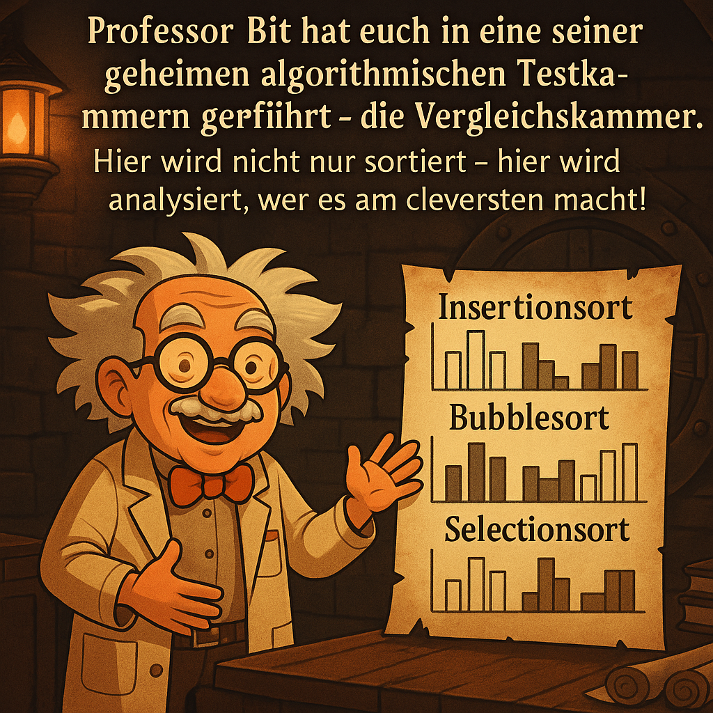

Station 5 – Sortierstrategien im Vergleich

Professor Bit hat euch in eine seiner geheimen algorithmischen Testkammern geführt – die Vergleichskammer. Hier wird nicht nur sortiert – hier wird analysiert, wer es am cleversten macht!
Eure Aufgabe:
Der Professor hat die Ergebnisse mehrerer Sortierversuche dokumentiert. Doch nur eine Kombination von Aussagen stimmt mit seinen Daten überein! Wählt weise – denn nur wenn ihr die effizienteste Strategie erkennt, öffnet sich das nächste Sicherheitstor!
Tipp: Denkt an die Anzahl der Schleifendurchläufe und die Vergleichsstrategie!